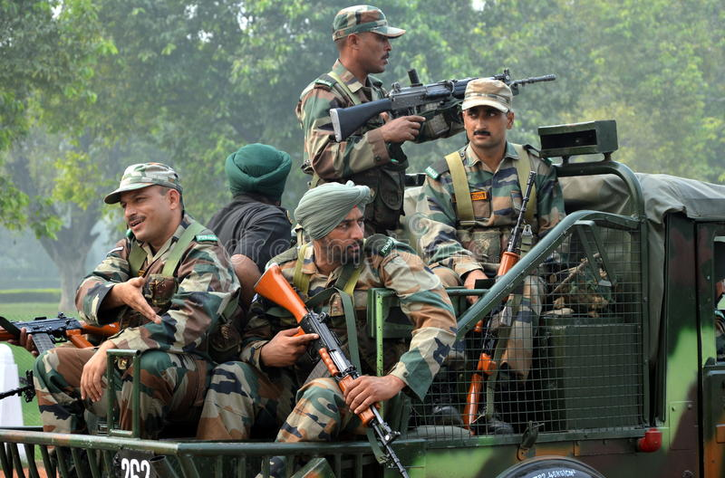
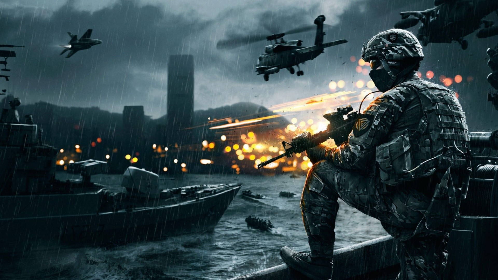

Manoj Mukund Naravane
CHIEF (COAS) OF INDIAN ARMY
The position is abbreviated as COAS in Indian Army, and is always held by a full General. The current COAS is General Manoj Mukund Naravane, who took office on 31 December 2019.
The post of Commander-in-Chief, India was established in 1748 to designate the commander of all forces of East India Company.
After 1857 the Commander-in-Chief become the supreme commander of British Indian Army.The Commander-in-Chief was closely in contact with Office of the Viceroy of India.
After partition in 1947 the post of Commander-in-Chief was divided into- Commander-in-Chief of Indian Army, Commander-in-Chief of Pakistan Army and Commander-in-Chief of British Forces in India and Pakistan. At Independence, the head of the Army was designated the "Commander-in-Chief, Indian Army." On 1 March 1948, the title of "Chief of the Army Staff" was added.[3] The office of the Chief of the Army Staff was created through The Commanders-In-Chief (Change in Designation) Act of the Indian Parliament in 1955. It replaced the erstwhile office of the Commander-in-Chief, Army.[4] The office is based at South Block of the Central Secretariat at Raisina Hill, New Delhi.
Appointments to the office are made by the Appointments Committee of the Cabinet (ACC). The COAS reaches superannuation upon three years in the office or at the age of 62, whichever is earlier.
The Indian Army (Hindi: Bhāratīya Thal Sēnā) is the land-based branch and the largest component of the Indian Armed Forces. The President of India is the Supreme Commander of the Indian Army,[4] and its professional head is the Chief of Army Staff (COAS), who is a four-star general. Two officers have been conferred with the rank of field marshal, a five-star rank, which is a ceremonial position of great honour. The Indian Army originated from the armies of the East India Company, which eventually became the British Indian Army, and the armies of the princely states, which were merged into the national army after independence. The units and regiments of the Indian Army have diverse histories and have participated in a number of battles and campaigns around the world, earning many battle and theatre honours before and after Independence.
The primary mission of the Indian Army is to ensure national security and national unity, to defend the nation from external aggression and internal threats, and to maintain peace and security within its borders. It conducts humanitarian rescue operations during natural calamities and other disturbances, such as Operation Surya Hope, and can also be requisitioned by the government to cope with internal threats. It is a major component of national power, alongside the Indian Navy and the Indian Air Force.[6] The army has been involved in four wars with neighbouring Pakistan and one with China. Other major operations undertaken by the army include Operation Vijay, Operation Meghdoot, and Operation Cactus. The army has conducted large peace time exercises such as Operation Brasstacks and Exercise Shoorveer, and it has also been an active participant in numerous United Nations peacekeeping missions, including those in Cyprus, Lebanon, Congo, Angola, Cambodia, Vietnam, Namibia, El Salvador, Liberia, Mozambique, South Sudan, and Somalia.
History of Indian Army
British Indian Army
In 1776, a Military Department was created within the government of the East India Company at Kolkata. Its main function was to record orders that were issued to the army by various departments of the East India Company for the territories under its control.[14]
With the Charter Act of 1833, the Secretariat of the government of the East India Company was reorganised into four departments, including a Military Department. The army in the presidencies of Bengal, Bombay and Madras functioned as respective Presidency Armies until 1 April 1895, when they were unified into a single Indian Army.[15][16][17][18] For administrative convenience, it was divided into four commands, namely Punjab (including the North West Frontier), Bengal, Madras (including Burma), and Bombay (including Sind, Quetta and Aden).
The British Indian Army was a critical force for maintaining the primacy of the British Empire, both in India and throughout the world. Besides maintaining the internal security of the British Raj, the Army fought in many other theatres: the Anglo-Burmese Wars; the First and Second Anglo-Sikh wars; the First, Second, and Third Anglo-Afghan wars; the First and Second opium wars, and the Boxer Rebellion in China; and in Abyssinia.
World wars
In the 20th century, the British Indian Army was a crucial adjunct to British forces in both world wars. 1.3 million Indian soldiers served in World War I (1914–1918) with the Allies, in which 74,187 Indian troops were killed or missing in action.[20] In 1915 there was a mutiny by Indian soldiers in Singapore. The United Kingdom made promises of self-governance to the Indian National Congress in return for its support but reneged on them after the war, following which the Indian Independence movement gained strength.
The "Indianisation" of the British Indian Army began with the formation of the Prince of Wales Royal Indian Military College at Dehradun, in March 1912, with the purpose of providing education to the scions of aristocratic and well-to-do Indian families and to prepare selected Indian boys for admission into the Royal Military College, Sandhurst. Cadets were given a King's commission, after passing out, and were posted to one of the eight units selected for Indianisation. Because of the slow pace of Indianisation, with just 69 officers being commissioned between 1918 and 1932, political pressure was applied, leading to the formation of the Indian Military Academy in 1932 and greater numbers of officers of Indian origin being commissioned.[21]
In World War II Indian soldiers fought alongside the Allies. In 1939, British officials had no plan for expansion and training of Indian forces, which comprised about 130,000 men (in addition there were 44,000 men in British units in India in 1939), whose mission was internal security and defence against a possible Soviet threat through Afghanistan. As the war progressed, the size and role of the Indian Army expanded dramatically, and troops were sent to battlefronts as soon as possible. The most serious problem was lack of equipment.[22] Indian units served in Burma, where in 1944–45, five Indian divisions were engaged along with one British and three African divisions. Even larger numbers operated in the Middle East. Some 87,000 Indian soldiers died in the war. By the end of the war it had become the largest volunteer army in history, rising to over 2.5 million men in August 1945.
In the African and Middle-Eastern Campaigns, captured Indian troops were given a choice to join the German Army, to eventually "liberate" India from Great Britain, instead of being sent to POW camps. These men, along with Indian students who were in Germany when the war broke out, made up what was called the Free India Legion. They were originally intended as pathfinders for German forces in Asia, but were soon sent to help guard the Atlantic Wall. Few who were part of the Free India Legion ever saw any combat, and very few were ever stationed outside Europe. At its height, the Free India Legion had over 3,000 troops in its ranks.[25]
In the African and Middle-Eastern Campaigns, captured Indian troops were given a choice to join the German Army, to eventually "liberate" India from Great Britain, instead of being sent to POW camps. These men, along with Indian students who were in Germany when the war broke out, made up what was called the Free India Legion. They were originally intended as pathfinders for German forces in Asia, but were soon sent to help guard the Atlantic Wall. Few who were part of the Free India Legion ever saw any combat, and very few were ever stationed outside Europe. At its height, the Free India Legion had over 3,000 troops in its ranks.[25]
Indian POWs also joined the Indian National Army, which was allied with the Empire of Japan. It was raised by a former colonel of the British Indian Army, General Mohan Singh, but was later led by Subhas Chandra Bose and Rash Bihari Bose. With the fall of Singapore in 1942, about 40,000 Indian soldiers were captured. When given the choice, over 30,000 joined the Indian National Army. Those who refused became POWs and were mostly shipped to New Guinea.[26] After initial success, this army was defeated, along with the Japanese; but it had a huge impact on the Indian independence movement.
Indian independence
Upon the Partition of India and Indian independence in 1947, four of the ten Gurkha regiments were transferred to the British Army. The rest of the British Indian Army was divided between the newly created nations of India and Pakistan. The Punjab Boundary Force, which had been formed to help police the Punjab during the partition period, was disbanded.[27] Headquarters Delhi and the East Punjab Command were formed to administer the area.
Army Day is celebrated on 15 January every year in India, in recognition of Lieutenant General K. M. Cariappa's taking over as the first commander-in-chief of the Indian Army from General Sir Francis Butcher, the last British commander-in-chief of India, on 15 January 1949. With effect from 26 January 1950, the date India became a republic, all active-duty Indian Army officers formerly holding the King's Commission were recommissioned and confirmed in their substantive ranks.

The departure of virtually all senior British officers following independence, and their replacement by Indian officers, meant many of the latter held acting ranks several ranks above their substantive ones. For instance, S. M. Shrinagesh, the ground-forces commander of Indian forces during the first Indo-Pak War of 1947–49 (and the future third COAS) was first an acting major-general and then an acting lieutenant-general during the conflict while holding the substantive rank of major, and only received a substantive promotion to lieutenant-colonel in August 1949.[28] Gopal Gurunath Bewoor, the future ninth COAS, was an acting colonel at his promotion to substantive major from substantive captain in 1949, while future Lieutenant General K. P. Candeth was an acting brigadier (substantive captain) at the same time.[29] In April 1948, the former Viceroy's Commissioned Officers (VCO) were re-designated Junior Commissioned Officers, while the former King's Commissioned Indian Officers (KCIO) and Indian Commissioned Officers (ICO), along with the former Indian Other Ranks (IOR), were respectively re-designated as Officers and Other Ranks.
The departure of virtually all senior British officers following independence, and their replacement by Indian officers, meant many of the latter held acting ranks several ranks above their substantive ones. For instance, S. M. Shrinagesh, the ground-forces commander of Indian forces during the first Indo-Pak War of 1947–49 (and the future third COAS) was first an acting major-general and then an acting lieutenant-general during the conflict while holding the substantive rank of major, and only received a substantive promotion to lieutenant-colonel in August 1949.[28] Gopal Gurunath Bewoor, the future ninth COAS, was an acting colonel at his promotion to substantive major from substantive captain in 1949, while future Lieutenant General K. P. Candeth was an acting brigadier (substantive captain) at the same time.
Conflicts and operations
First Kashmir War (1947)
Immediately after independence, tensions between India and Pakistan erupted into the first of three full-scale wars between the two nations over the then princely state of Kashmir. The Maharaja of Kashmir wanted to have a standstill position. Since Kashmir was a Muslim majority state, Pakistan wanted to make Kashmir a Pakistani territory. As a result, Pakistan invaded Kashmir on 22 October 1947, causing Maharaja Hari Singh to look to India, specifically to Lord Mountbatten of Burma, the governor general, for help. He signed the Instrument of Accession to India on 26 October 1947. Indian troops were airlifted to Srinagar from 27 October dawn onwards.[32] This contingent included General Thimayya who distinguished himself in the operation and in the years that followed became a Chief of the Indian Army. An intense war was waged across the state and former comrades found themselves fighting each other. Pakistan suffered significant losses. Its forces were stopped on the line formed which is now called the Line of Control (LOC).

Annexation of Hyderabad (1948)
After the partition of India, Hyderabad State, a princely state under the rule of the Nizam of Hyderabad, chose to remain independent. The following stand-off between the Government of India and the Nizam ended on 12 September 1948, when India's then Deputy Prime Minister Sardar Vallabhbhai Patel ordered Indian troops to secure Hyderabad State. During five days of fighting, the Indian Army, backed by an Indian Air Force squadron of Hawker Tempest aircraft, routed the Hyderabad State forces. Five Indian Army infantry battalions and one armoured squadron were engaged in the operation. The following day, Hyderabad was proclaimed part of India. Major General Joyanto Nath Chaudhuri, who led the operation, and accepted the surrender of the Nizam's forces on 18 September 1948, was appointed the military governor of Hyderabad, to restore law and order, and served until 1949.
Annexation of Goa, Daman and Diu (1961)
Even though the British and French vacated all their colonial possessions in the Indian subcontinent, Portugal refused to relinquish control of its colonies of Goa, Daman, and Diu. After repeated attempts by India to negotiate were spurned by Portuguese prime minister and dictator, António de Oliveira Salazar, on 12 December 1961 India launched Operation Vijay to capture the Portuguese colonies, which was accomplished by small contingents of Indian troops. After a brief conflict that lasted twenty-six hours—during which 31 Portuguese soldiers were killed, the Portuguese Navy frigate NRP Afonso de Albuquerque was destroyed, and over 3,000 Portuguese were captured—Portuguese General Manuel António Vassalo e Silva surrendered to Major General Kunhiraman Palat Kandoth of the Indian Army. Goa, Daman, and Diu became a part of the Republic of India.
Sino-Indian War (1962)
The cause of this war was a dispute over the sovereignty of the widely separated Aksai Chin and Arunachal Pradesh border regions. Aksai Chin, claimed by India as part of Kashmir, and by China as part of Xinjiang, contains an important road link that connects the Chinese regions of Tibet and Xinjiang. China's construction of this road was one of the triggers of the conflict.
Small-scale clashes between Indian and Chinese forces broke out as India insisted on the disputed McMahon Line being regarded as the international border between the two countries. Chinese troops claimed not to have retaliated to the cross-border firing by Indian troops, despite sustaining losses.[35] China's suspicion of India's involvement in Tibet created more rifts between the two countries.
Indo-Pakistani War of 1965
A second confrontation with Pakistan took place in 1965. Although the war is described as inconclusive, India had the better of the war and was the clear winner in tactical and strategic terms.[39][40][41] Pakistani president Ayub Khan launched Operation Gibraltar in August 1965, during which Pakistani paramilitary troops infiltrated into Indian-administered Kashmir and attempted to ignite anti-India agitation in Jammu and Kashmir. Pakistani leaders believed that India, which was still recovering from the Sino-Indian War, would be unable to deal with a military thrust and a Kashmiri rebellion. India reacted swiftly and launched a counter-offensive against Pakistan. In reply, on 1 September Pakistan launched Operation Grand Slam, invading India's Chamb-Jaurian sector. In retaliation, the Indian Army launched a major offensive all along its border with Pakistan, with Lahore as its prime target.
1967 Sino-Indian conflict
The 1967 Sino-Indian skirmish, also known as the Cho La incident, was a military conflict between Indian troops and members of the Chinese People's Liberation Army who, on 1 October 1967, invaded Sikkim, which was then a protectorate of India. On 10 October, both sides clashed again. Defence minister Sardar Swaran Singh assured the Indian people that the government was taking care of developments along the border. Indian losses were 88 killed, and 163 wounded, while Chinese casualties were 300 killed and 450 wounded in Nathula, and 40 in Chola.[48] The Chinese Army left Sikkim after this defeat.
Operation against the Naxalites during 1971
Under Prime Minister Indira Gandhi, during the president's rule in 1971, the Indian Army and the Indian police launched Operation Steeplechase, a gigantic "counter-insurgency" operation against the Naxalites, which resulted in the death of hundreds of Naxalites and the imprisonment of more than 20,000 suspects and cadres, including senior leaders.[52] The army was also assisted by a brigade of para commandos and the Indian paramilitary. The operation was organised in October 1969, and Lieutenant General J.F.R. Jacob was enjoined by Govind Narain, the Home Secretary, that "there should be no publicity and no records". Jacob's request to be presented with written orders was also refused by Sam Manekshaw.
Bangladesh Liberation War of 1971
An independence movement broke out in East Pakistan which was crushed by Pakistani forces. Due to large-scale atrocities against them, thousands of Bengalis took refuge in neighbouring India causing a major refugee crisis there. In early 1971, India declared its full-support for the Bengali rebels, known as Mukti Bahini, and Indian agents were extensively involved in covert operations to aid them.[citation needed]
On 20 November 1971, the Indian Army moved 14 Punjab Battalion, of the 45th Cavalry regiment, into Garibpur, a strategically important town in East Pakistan, near India's border, and successfully captured it. The following day, more clashes took place between Indian and Pakistani forces. Wary of India's growing involvement in the Bengali rebellion, the Pakistan Air Force (PAF) launched a preemptive strike on 10 Indian air bases—at Srinagar, Jammu, Pathankot, Amritsar, Agra, Adampur, Jodhpur, Jaisalmer, Uttarlai, and Sirsa—at 17:45 hours on 3 December. However, this aerial offensive failed to accomplish its objectives, and gave India an excuse to declare a full-scale war against Pakistan the same day. By midnight, the Indian Army, accompanied by the Indian Air Force, launched a major three-pronged assault into East Pakistan.
Siachen conflict (1984)
The Siachen Glacier, although a part of the Kashmir region, was not demarcated on maps prepared and exchanged between the two sides in 1947. In consequence, prior to the 1980s neither India nor Pakistan maintained a permanent military presence in the region. However, beginning in the 1950s, Pakistan began sending mountaineering expeditions to the glacier. By the early 1980s, the Government of Pakistan was granting special expedition permits to mountaineers and United States Army maps showed Siachen as a part of Pakistan.[citation needed] This practice gave rise to the term oropolitics.
Kargil war (1999)
In 1998, India carried out nuclear tests; and a few days later, Pakistan responded with nuclear tests of its own, giving both countries nuclear deterrence capability, although India had tested a hydrogen bomb, which Pakistan lacked. Diplomatic tensions eased after the Lahore Summit was held in 1999. However, the sense of optimism was short-lived. In mid-1999, Pakistani paramilitary forces and Kashmiri insurgents captured the deserted, but strategic, Himalayan heights in the Kargil district of India. These had been vacated by the Indian Army during the onset of the inhospitable winter and were to be reoccupied in spring. The troops that took control of these areas received important support, of both arms and supplies, from Pakistan. Some of the heights under their control, which also included the Tiger Hill, overlooked the vital Srinagar–Leh Highway (NH 1A), Batalik, and Dras.
2016 Surgical Strikes on Kashmir and the 2016–2018 India-Pakistan conflict
On 18 September 2016, a fedayeen attack was made by four armed militants on an army base near the town of Uri. Nineteen Indian Army soldiers were killed. India accused Jaish-e-Muhammad, a Pakistan-based terrorist organisation.[79] On 29 September 2016, the India Army announced that it conducted "surgical strikes" against militant launch pads across the Line of Control, in Pakistani-administered Kashmir, and inflicted "significant casualties".[80] Indian media reported the casualty figures variously from 35 to 70 killed.[81][82] Partial footage of the strikes was released to the Indian media on 27 June 2018 as proof of the strike.[83][84][85] The incident triggered the 2016–2018 India-Pakistan border conflict, which ended on 16 June 2018 with both India and Pakistan agreeing on a ceasefire.

United Nations peacekeeping missions
India has been the largest troop contributor to UN peacekeeping missions since its inception. So far, India has taken part in 43 Peacekeeping missions, with a total contribution exceeding 160,000 troops and a significant number of police personnel having been deployed. In 2014, India was the third largest troop contributor (TCC), with 7,860 personnel deployed, of which 995 were police personnel, including the first UN Female Formed Police Unit, serving with ten UN peacekeeping missions.[88][89] As of 30 June 2014, 157 Indians have been killed during such missions.[90] The Indian army has also provided paramedical units to facilitate the withdrawal of the sick and wounded.